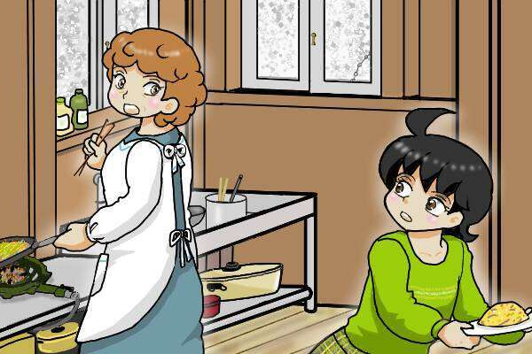
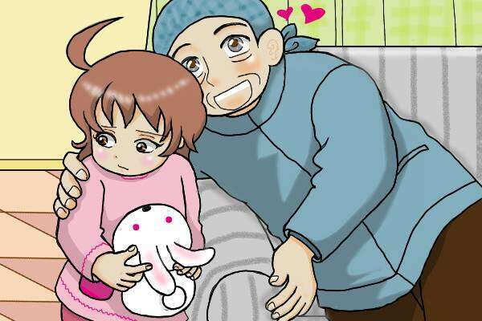
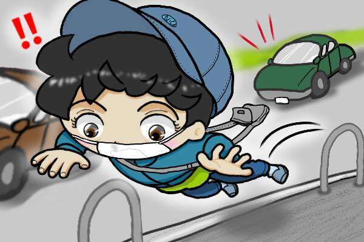
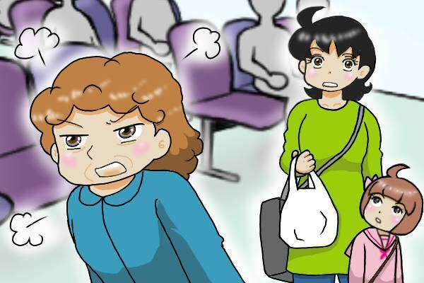
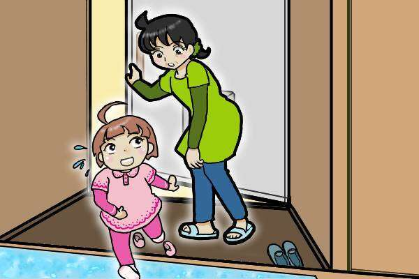
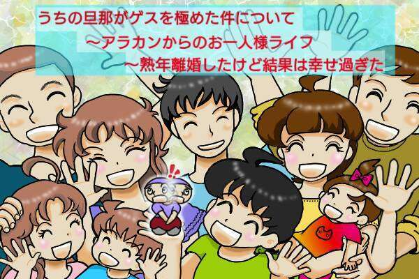
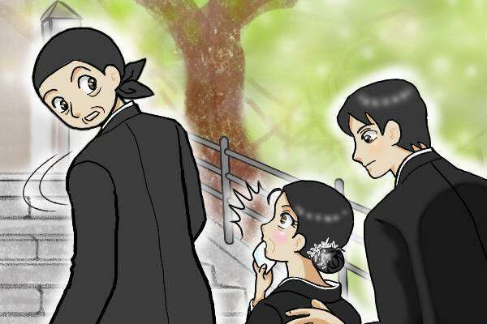
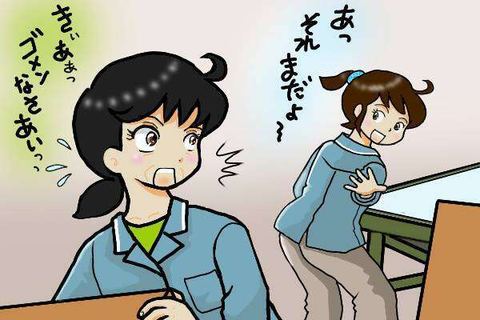

含有关键字“okigane”的文章
1-
 每个人的经历 发布日期：
每个人的经历 发布日期：我母亲的事成了街坊邻里的话题。尽管如此，我还是和那些保持亲密关系的朋友们留下了美好的回忆……
-
 每个人的经历 发布日期：
每个人的经历 发布日期：听到“卡查里”的一声，他的脸色变得惨白。眨眼间，我的小女儿就从屋内反锁了门……
-

每个人的经历 发布日期：“我怎样才能让妈妈夸我呢？”一个孩子的答案就是妈妈的肤色……
-

每个人的经历 发布日期：我对总是按照自己的节奏行事的丈夫感到恼火。我的小孙女根本不习惯……
-

每个人的经历 发布日期：“我的身体动作变慢了……”我好一阵子第一次跑，摔了个大跤！我感觉到自己的变化...
-

每个人的经历 发布日期：一个对家人缺乏爱的母亲。即使我去看我的孙子并说：“我想看到他长大”，.../O...
-

每个人的经历 发布日期：“我的母亲是典型的有毒父母。”小时候妈妈经常对我说的“话”/哦...
-

每个人的经历 发布日期：换工作、抗击疾病……经历了很多事情，但结果还好！我太高兴了，中年离婚/Oki...
-

每个人的经历 发布日期：“我们都在变老。”在我二女儿的婚礼上，我一段时间以来第一次见到了我两年前分手的前夫……
-

每个人的经历 发布日期：中风后我可以恢复正常生活吗？我缺乏视力，身体感觉沉重，工作中犯了很多错误......
-
每个人的经历 发布日期：
有一天，大脑血管突然堵塞……忽视“无声杀手”糖尿病的结果……